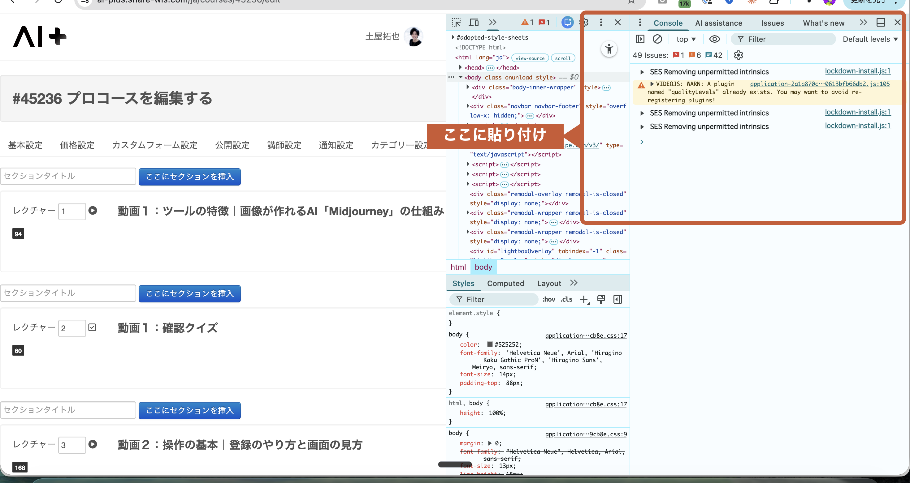

/plugin marketplace add TakuyaTsuchiya/wisdombase-lms-skill
/plugin install wisdombase@wisdombase-lms-skill
/wisdombase でも起動可能
// 動画レクチャー一括作成スクリプト // 実行URL: https://ai-plus.share-wis.com/ja/courses/47002/edit (async () => { const csrfToken = document.querySelector('meta[name="csrf-token"]').content; // ★★★ ユーザー入力パラメータ ★★★ const COURSE_ID = 47002; const LECTURES = [ 'M2_S1_マンガ生成の基礎', 'M2_S2_キャラクター設計のコツ', 'M2_S3_ストーリー構成の組み立て方', ]; // ★★★ ここまで ★★★ // ...動画レクチャー作成 → ID取得処理が続く... })();

F12 または Cmd + Option + I でDevToolsを開く → Consoleタブ → 貼り付けて Enter